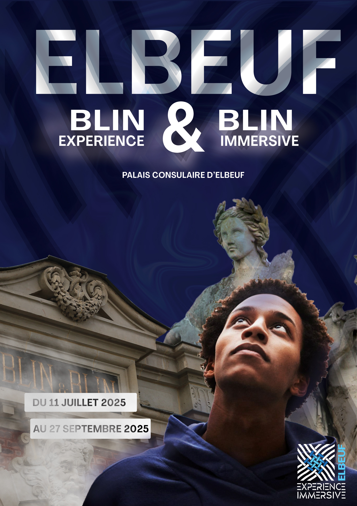

Pour ce projet, il s’agissait de concevoir un dispositif immersif destiné à mettre en valeur le patrimoine industriel d’Elbeuf, une ville marquée par son passé textile.
Installé dans le Palais consulaire, le projet propose une expérience scénarisée qui plonge les visiteurs dans l’histoire des lieux, à travers images, sons et narration.
Un travail complet qui mêle création de contenus visuels, construction d’une identité graphique forte et déploiement d’une stratégie de communication adaptée, en exploitant les outils du numérique et les codes de l’immersion.


Sur ce projet, j’ai été impliqué à plusieurs niveaux :
• Mise en place d'une ligne éditoriale
• Réalisation d'un Wordpress
• Réalisation d'une affiche
• Réalisation d'un logo
• Réalisation d'un Teaser vidéo
Ce projet m’a permis de consolider mes compétences en audiovisuel ainsi qu'en infographie.

